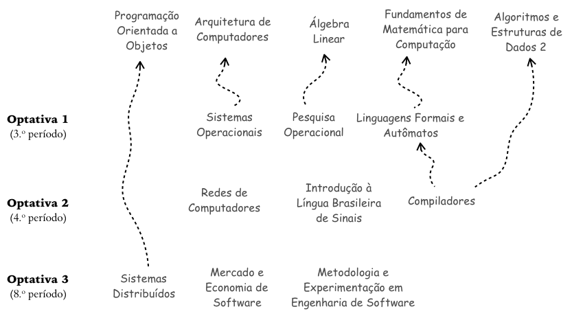
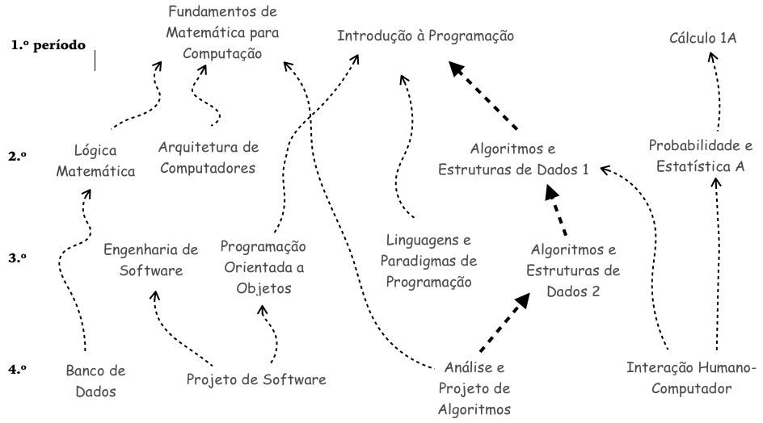

Existem pré-requisitos entre as disciplinas. Aqueles das disciplinas optativas são exibidos na Figura 3, enquanto aqueles das disciplinas obrigatórias na Figura 4 (p. 44).
Observe que as disciplinas optativas estão agrupadas na Figura 3 conforme as opções oferecidas aos estudantes. Por exemplo, a disciplina OPTATIVA 1, sugerida para ser cursada no 3.º período, será escolhida pelo estudante dentre as seguintes opções: “Sistemas Operacionais” (p. 53), “Pesquisa Operacional” (p. 53) ou “Linguagens Formais e Autômatos” (p. 53). Para a disciplina OPTATIVA 2, sugerida para ser cursada no 4.º período, as opções são: “Redes de Computadores” (p. 54), “Introdução à Língua Brasileira de Sinais” (p. 53) e “Compiladores” (p. 54). Para a disciplina OPTATIVA 3, sugerida para ser cursada no 8.º período, as opções são: “Sistemas Distribuídos” (p. 55), “Mercado e Economia de Software” (p. 74) e “Metodologia e Experimentação em Engenharia de Software” (p. 74).
Ainda convém destacar que algumas disciplinas optativas dependem de outras obrigatórias. Por exemplo, conforme ilustrado abaixo, “Pesquisa Operacional” tem como pré-requisito a disciplina obrigatória “Álgebra Linear”.
Figura 3 Pré-requisitos das disciplinas optativas.
Todos os pré-requisitos das disciplinas obrigatórias são exibidos na Figura 4. As disciplinas seguem alinhadas, na horizontal, do primeiro até o último (nono) período do curso. Em particular, o caminho mais longo, não é o caminho crítico, encontra-se devidamente destacado dos demais.
Figura 4 Pré-requisitos das disciplinas obrigatórias.
